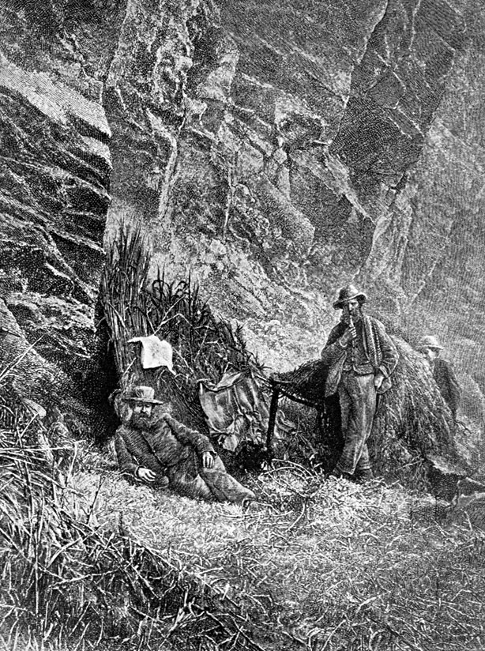
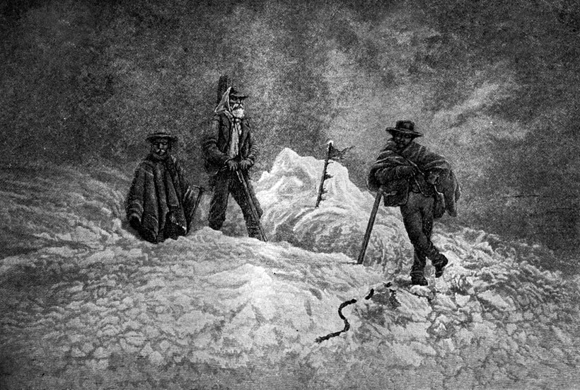
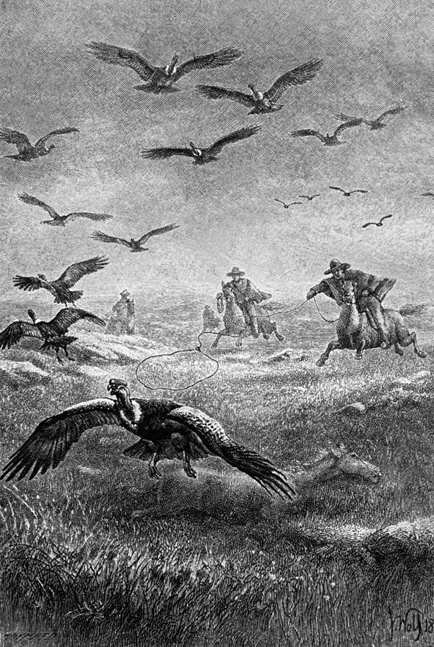
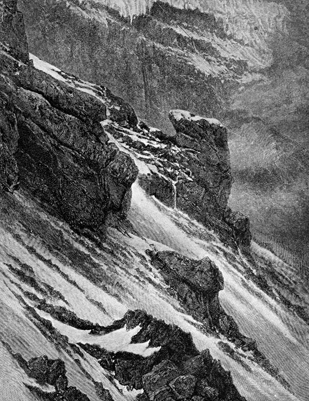
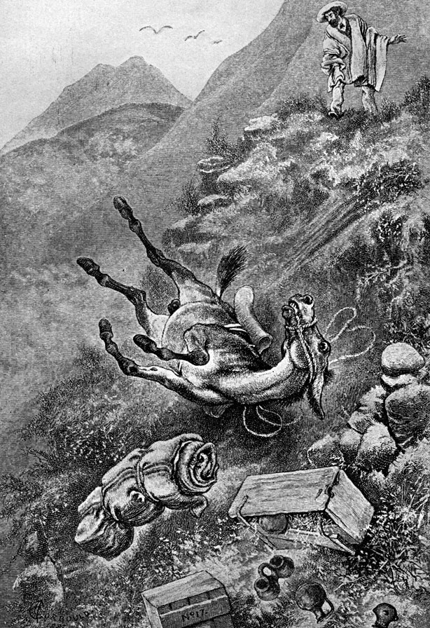
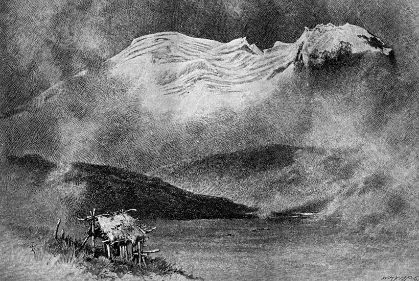
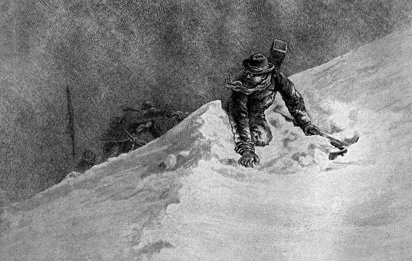
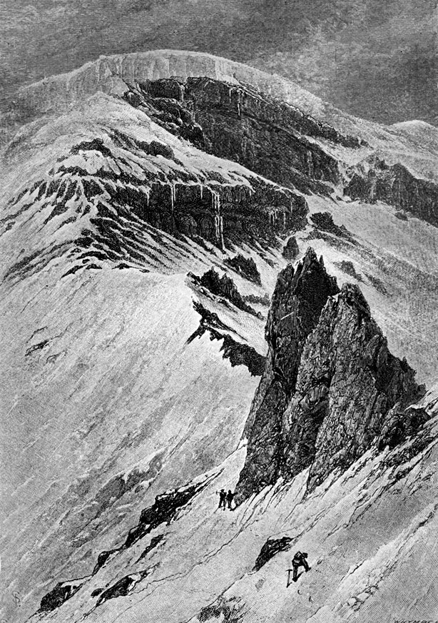

- Volver a
- Inicio
- Revista Digital
- Libros
Escaladas en Los Andes
Restauración Fotográfica: Centro Cultural Argentino de Montaña, Natalia Fernández Juárez
AUTOR: Edward Whymper (27 de abril de 1840 – 16 de septiembre de 1911)
EDITORIAL: Juventud, Barcelona , España.
AÑO: Primera Edición octubre de 1953
FORMATO: 15 x 23 cm.
PÁGINAS: 160
IDIOMA: Castellano
OBSERVACIONES: El libro de Whymper es de gran interés pues es un excelente observador no solo de la naturaleza sino de los habitantes y sus costumbres, relatando anécdotas ocurridas en los sitios que visitaba y exploraba.

Tapa del libro Escaladas en Los Andes. Autor: Edward Whymper
Otros libros del autor
1871: Escaladas en el Cervino
1879: Escaladas en Los Andes

Campamento en el Ecuador en el corredor Machai. Libro: Escaladas en los Andes de Edward Whymper
Capitulo 5 (Relata la ascensión al Volcán Cotopaxi)
El 14 de febrero salimos de Machachi para el Cotopaxi. La expedición la componían Jean-Antoine y Louis, Perring, seis naturales de Machachi que nos servían de porteadores, nueve mulos y tres arrieros, y además un par de ovejas, dos animales sin gracia alguna que ofrecían una marcada resistencia al sacrificio. Se oponían con todas sus fuerzas a marchar, y cuando después de infinitas persuasiones lo conseguimos, caminaban metiéndose entre nuestras piernas como si intentaran hacernos caer.
Nuestro proyecto era llegar en una sola etapa al Cotopaxi, pero una violenta tempestad nos obligó a buscar refugio en un poblado muy pequeño compuesto de una granja y un grupo de cabañas. El poblado se llama Pedregal y está situado en campo abierto en la falda norte del Rumiñahui.
La granja tenía alrededor la tapia acostumbrada. Un enorme portal conducía al patio, y en el extremo de éste se alzaba una capilla en ruinas en la que se nos invitó a alojarnos. A la hora del crepúsculo las campanas tocaron a oración, y a través del árido terreno fueron apareciendo jóvenes y viejos en grupos de dos o tres para rezar por sí mismos sin asistencia de sacerdote alguno.
Al día siguiente por la mañana proseguimos nuestro camino subiendo el valle del río Pita, tierra suavemente ondulada cuya esterilidad y desolación iban en aumento a medida que nos aproximábamos a la montaña. De pronto entramos en el llano de Limpiopongo, que divide las aguas del Pita y del Cutuchi, llano que alcanza una extensión de varios kilómetros. Aquí encontré, en grandes cantidades, un escarabajo más bien grande, perteneciente a la misma tribu de nuestro coleóptero, de una especie nueva para la ciencia, y que según H. W. Bates es tan distinto de las formas conocidas, que merece encabezar un nuevo género (Leucopeloea). La lencopeloea albescens aparentemente trata de mantenerse cabeza abajo. Vi grandes cantidades en esta rara posición. Otras muchas yacían de espalda y pataleando, y también había multitud de ellas muertas y boca arriba. En la llanura y más en lo alto encontré otro escarabajo muy análogo (Platycoclia nigri-cauda), de poco más o menos dos centímetros y medio de longitud, que igualmente parece ser una nueva especie. En cambio, los Colpodes — tan numerosos en las grandes alturas de los otros Andes del Ecuador — y los hocicudos Curculios — que podían encontrarse muchas veces cerca de la línea de las nieves — no aparecían aquí.
Esparcidas por la llanura y sus alrededores y en lo alto de las lomas o en las pendientes, donde no era posible que hubieran sido arrastradas por las aguas, a seis u ocho kilómetros del cráter, había muchas masas redondeadas de lava escoriácea, cuyas dimensiones iban desde unos cuantos centímetros a ciento ochenta o doscientos quince de diámetro, y con apariencia de bombas lanzadas por las erupciones. La llanura, sin embargo, no aparecía agrietada y se había librado casi por completo de las corrientes de lava descendidas del cono en 1877. Esto, sin duda alguna, era debido a la lava de Yanasache — nombre utilizado por Thielmann y que nunca oí emplear a los naturales, con el que me refiero a la principal corriente de lava de este lado — que divide los desbordamientos eruptivos enviándolos a derecha e izquierda. Nos dirigimos hacia esta corriente, pero, al ver que resultaba demasiado difícil para nuestros mulos, la bordeamos por su base (a 3.100 metros) y entramos en un valle lleno de montículos de ceniza por el lado más alejado de la base, que era el meridional, y que conducía directamente a la cumbre. El terreno no era difícil para el hombre, pero sí para una caravana de la que formaban parte animales. A las 3.50 de la tarde llegamos a un tosco armazón de palos situado a 4.300 metros, donde decidimos acampar y devolver los animales a Machachi. Más tarde supimos que, sin proponérnoslo, habíamos llegado al mismo lugar en que había acampado Yon Thielmann, de lo que era testimonio el escrito contenido en una botella.

David J. A. Carrel y Campana. El cielo estaba sombrío en la cima del Chimborazo con nubarrones cenicientos.
Libro: Escaladas en los Andes de Edward Whymper
El sitio no era muy conveniente, ya que carecía de dos de los elementos esenciales para emplazar un campamento: agua y madera. A causa de ello, la mitad de mi gente tenía que subir en busca de nieve, mientras que los otros habían de bajar seiscientos metros para encontrar combustible. Yo quedaba allí como cocinero, redactor del diario de la expedición y rabadán. Una de las ovejas había sido sacrificada y algunos de sus mejores trozos estaban puestos ya a cocer, pues había prometido a mi gente que cuando volviesen encontrarían una comida con la que compensar la media hambre anterior. Pero cuando se fueron empecé a pensar que tal vez mis promesas habían sido excesivas. El fuego no iba bien y tuve que tenderme en el suelo y soplar con fuerza para que no se extinguiera del todo. Entonces empezó a nevar y a granizar. Mis pies se enfriaban de manera poco grata mientras mi cabeza se calentaba en exceso. De pronto oí un ruido, levanté la cabeza y vi que la oveja superviviente había soltado sus ligaduras y se lanzaba pendiente abajo. Corrí tras ella, la capturé y la amonesté respecto de la travesura de intentar escaparse. La oveja parecía un tanto avergonzada, pero, no obstante, se resistía a volver, y cuando al fin llegamos arriba, me encontré con que la oveja que estaba cociéndose había caído al suelo y casi había apagado la lumbre. La salsa hube de darla por perdida entre las cenizas, y la carne estaba lamentablemente envuelta por una capa de barro. Cosa de peor aspecto nunca la he visto en mi vida, y empecé a pensar de qué procedimientos podría valerme para dejarla algo presentable. Pero todo lo que acaba bien es bueno. Conseguí arreglarlo a tiempo y mi gente nunca supo que yo había limpiado la carne con el cepillo de las botas, y el interior de las cazuelas con un pañuelo.
La noche del 15 al 16 de febrero la pasamos sin novedad. Hubo algún que otro ruido sordo en el interior de la montaña y otros bastante más agudos y análogos a un golpear de puertas. Nevó durante varias horas y por la mañana encontramos que la tienda y las cajas estaban cubiertas de nieve, que no tardó mucho en desaparecer del cono de la montaña. Pronto habríamos de observar que esto era lo normal. Diariamente caían varios centímetros de nieve, pero permanecía sin desaparecer por muy poco tiempo, a pesar de que la temperatura del aire era a veces tan baja que llegaba a los — 4 grados. El calor del cono la liquidaba en seguida, y el agua resultante era absorbida inmediatamente por el poroso suelo, cubriéndo¬se la montaña, desde la cúspide a la base, con un cendal de vapor. Esta es la manera de formarse la atmósfera neblinosa a que me he referido.

Se precipitaron entre ellos y echaron loas lazos. Libro: Escaladas en los Andes de Edward Whymper
El primer que hacer de la mañana fue mejorar el refugio de nuestra gente y decidir a suertes quiénes de ellos serían despedidos, pues resultaban demasiadas bocas para nuestras provisiones. A todos los hombres de Machachi se les dejó elegir entre regresar a sus casas o quedarse, y estos últimos recibieron como propina un crucifijo plateado. "Si yo no creyera en esto — dijo el más viejo de todos, Gregorio Albuja — no habría venido aquí. Me quedaré con ustedes." Y cogiendo la cruz que yo le ofrecía, la besó reverentemente y la pasó a sus compañeros, que hicieron lo mismo. A Gregorio se unieron otros dos, y los restantes volvieron a Machachi.
A los que se quedaron los vestimos según nuestras ideas de lo conveniente, pues la indumentaria usual de los naturales no puede ser más inadecuada de lo que es.
Comienza ésta por un sombrero de paja que se lo lleva el viento, y termina con unas alpargatas que si son utilizables para caminar por las carreteras polvorientas, son absolutamente insuficientes para la protección del pie cuando se marcha sobre la nieve y las rocas. Después de darles algunas de nuestras prendas de reserva, los despaché hacia arriba bajo la dirección de Jean-Antoine. Llevaban una tienda, cuerda, provisiones de boca y demás. Su marcha fué una dura lucha con los elementos. Los ecuatorianos al cabo de algún tiempo estaban agotados y, como de costumbre, lo más fuerte del trabajo tuvieron que hacerlo los Carrel. El tiempo era, desde luego, malísimo. Durante casi todo el día estuvo granizando o nevando, y cuando no, había niebla o viento alto, acompañado de muchos truenos y relámpagos.
La situación meteorológica del 17 de febrero fué muy parecida a la del día anterior. Al amanecer, la temperatura era de — 2°,22, mientras que en la mañana precedente había sido de — 3°,97- Pero, en cambio, no oímos ninguno de los ruidos internos del día 16. A las siete de la mañana, la cumbre se hizo visible por espacio de algunos minutos, y entonces vimos que lanzaba constantemente por el cráter enormes nubes de vapor, que el viento llevaba hacia el Norte. Las tormentas de granizo eran frecuentes, y tanto allí como en nuestro posterior campamento de la cumbre, de vez en cuando se producían relámpagos, incómodos y peligrosos por su proximidad, dándonos la impresión de que la montaña estaba saturada de electricidad.

Acantilados de hielo bajo la cumbre del Chimborazo, vista tomada desde una altura de 5.640 mts.
Libro: Escaladas en los Andes de Edward Whymper
Cuando nos fue posible salir al exterior de la tienda, exploramos los alrededores, pero nuestros descubrimientos fueron inferiores a los realizados en cualquier otra de las montañas anteriormente visitadas. Los escarabajos ya mencionados y una variedad frecuentísima de rana {Phryniscus laevis, Gthr.) fueron lo único del reino animal que se nos ofreció a la vista. Alrededor de nuestro campamento y también debajo de él había, sobre lava, líquenes del género Stereocaulon y Lecanora, y entre los 4.300 y 4.600 metros encontramos alguna valeriana (V. Bonplandiana, Wedd.) y unas cuantas plantas dispersas de genciana en flor (G. foliosa, H. B. K.), y dos compuestas (Culcitium nivale y Senecio humillimus, Sz. Bip.). Por la parte superior del campamento no encontré nada, ni vegetal ni animal, salvo algunas manchas descoloridas de un musgo (a 4.682 metros) dudosamente identificado como Webera nutans, Schimp. Todas estas plantas crecían entre ceniza y estaban cubiertas por ella, presentando por consiguiente un aspecto muy sucio y triste.
Los preparativos para la marcha hacia la cumbre estaban ya terminados. La tienda quedaría montada y bien provista para el caso de una retirada forzosa; en ella quedaban alimentos suficientes para varios días. La mañana del 18 de febrero fué mucho mejor que de costumbre, y la parte superior del cono estuvo libre de nubes por espacio de varias horas. Despaché a Jean-Antoine Carrel con dos naturales a las 5.20, y a las 6 salí con Louis, alcanzando a los otros cuando se hallaban a una altura aproximada de 5.185 metros sobre el nivel del mar. Pudimos contemplar muy bien el Sincholagua (4.990 m.), el Antisana (5.895) y el Cayambe (5.850), y dedicamos un rato a examinar aquellas montañas con un telescopio con idea de subir a ellas. El Antisana seguía una dirección entre NE. y E., se hallaba a unos cuarenta y cinco kilómetros de nosotros, y por detrás de él y a mayor altura se veía una serie de cúmulos que según mis cálculos se hallaban por lo menos a 7.000 metros sobre el nivel del mar. Es la mayor elevación a que he visto nunca este tipo de nubes.
La subida al Cotopaxi, por el camino que nosotros seguimos, fué un paseo. La dirección que tomamos consistió en marchar a lo largo de la cresta de una loma un tanto imprecisa que desciende casi sin interrupción desde la cumbre hasta la montaña de Rumiñahui. No nos vimos obligados a hacer ninguna escalada. El campamento quedaba a 2.600 metros del cráter, y en esta distancia subimos 1.350. A la altura de 4.700 metros comenzaban las manchas aisladas de nieve, y un poco más arriba empezamos a marchar ininterrumpidamente por ella hasta la pendiente en que nos proponíamos acampar. Con el fin de asegurar la regularidad de la marcha, íbamos encordados, sistema que los naturales no eran capaces de comprender, pero todavía se maravillaron más al vernos utilizar el piolet para tallar escalones en la nieve y facilitar el avance. La particularidad más notable de esta parte de la montaña era la existencia de glaciares en la parte superior del cono. Los veíamos a ambos lados de nosotros y en algunos lugares llegaban a una distancia de 150 metros de la cumbre; pero a causa de estar en gran parte cubiertos por ceniza, no era posible determinar con exactitud los puntos inicial y final, y por la misma razón resultaban difícilmente identificables a distancia.

Fue rodando por la pendiente y desaparecio. Libro: Escaladas en los Andes de Edward Whymper
A las once de la mañana llegamos al pie de la gran pendiente de ceniza situada al lado Oeste de la cumbre, pendiente que conduce al borde del cráter. Nos encontramos con que era la más trabajosa para el ascenso. Calculé que medía 228 metros de altura y 335 de recorrido. La pendiente estaba formada por los materiales que diariamente, y aun puede decirse que de hora en hora, arrojaba el cráter, y se mantenía en la máxima inclinación compatible con la estabilidad. La mayoría de las partículas arrojadas era de unas proporciones mínimas: quinientas juntas representaban el peso de 0,065 gramos, y aparecían mezcladas con otros fragmentos de lava de forma angulosa y de 6,35 milímetros de diámetro. Experimentalmente es sabido que estas materias pueden sostenerse hasta alcanzar un ángulo de 41 grados, pero la pendiente en que nos encontrábamos no llegaba, según creo, más allá de los 37 grados. Depositamos nuestra impedimenta en la base de la pendiente para continuar la ascensión, y observamos que a veces algunas líneas de hielo daban una cierta estabilidad a aquellos materiales, que de otro modo, y bajo nuestros pasos, se habrían deslizado en grandes masas.
Avanzamos por esta inestable pendiente a la mayor velocidad posible y alcanzamos el borde Oeste del cráter exactamente al mediodía. El cráter aparecía casi lleno de humo y vapor que dificultaban la visión. El borde opuesto apenas podía vislumbrarse, y el fondo quedaba en absoluto oculto. A causa del constante movimiento de los vapores, nos hicimos una idea bastante completa de la forma del cráter, aunque su conjunto no nos fué posible apreciarlo hasta la noche.
A los pocos minutos de nuestra llegada, un bramido que subía desde lo profundo nos advirtió que el "animal" — tal era el nombre dado al volcán por los Carrel — estaba vivo. Habíamos convenido que cada uno procurara salvarse por su cuenta en caso de que sobreviniera una erupción, abandonando incluso la impedimenta. Al oír el bramido, en la cara de todos nosotros se dibujó un claro "sálvese el que pueda", pero antes de que hubiéramos pronunciado una palabra nos vimos envueltos solamente por una nube de vapor templado y no muy enojoso, y acordamos quedarnos.
El emplazamiento de la tienda fué el primer problema puesto a consideración. Se decidió por unanimidad que no convenía acampar en lo alto de la pendiente — demasiado próxima al borde del cráter — a causa del viento y del peligro de los relámpagos. Cuanto más examinaba la pendiente, menos me gustaba. Era desnuda, abierta y en extremo resbaladiza. Jean-Antoine y yo salimos, en vista de ello, en busca de un lugar mejor, pero después de gastar varias horas en recorrer sin resultado una cuarta parte del cráter volvimos junto a nuestros compañeros y nos pusimos todos a la obra tratando de hacer una plataforma sobre la ceniza. La tarea resultaba larga y difícil. A diferencia de lo que ocurría con la nieve, cuando se bate o golpea con los pies, aquella masa no ganaba en coherencia, y cuanta más ceniza rastrillábamos para formar la plataforma, más caía desde arriba. Por último, logramos darle una cierta seguridad haciendo unos canales en la parte de la pendiente situada sobre nosotros y trasladando con gran cuidado muchas toneladas de ceniza hacia la parte inferior de la plataforma para fortalecer su base. Las cuerdas de la tienda quedaron aseguradas por grandes bloques de lava, que trajimos desde muy lejos y enterramos en la ceniza. Para aumentar la seguridad, pusimos cuatro cuerdas más de las acostumbradas, y otra más larga formando una especie de barandal desde la tienda al lugar más conveniente del cráter, del cual nos separaban setenta y seis metros. Una vez hecho esto, los naturales regresaron al campamento inferior y los Cairel y yo quedamos solos.

El Antisana de 5.897 mts. visto desde a hacienda a 4.058 mts. Libro: Escaladas en los Andes de Edward Whymper
Cuando se hizo de noche, subimos a lo alto para ver el interior del cráter. El aire estaba frío y sosegado. Podíamos oír el sordo bramido del vapor cuando de vez en cuando salía. Nuestra larga cuerda servía para guiarnos en la obscuridad y para aminorar el riesgo de perder el equilibrio en la pendiente de ceniza. Asido a ella llegué hasta arriba y me dispuse a ver algo en verdad emocionante, pues una luz vivísima salida de la parte inferior de las nubes de vapor mostraba que en lo profundo había fuego. A gatas, ya que el borde del cráter estaba próximo, me incliné para contemplar lo desconocido, mientras Carrel, detrás de mí, permanecía asido a mis piernas.
Los vapores, aunque estuviesen allí, como antes, no ocultaban la visión total del amplio cráter. Vimos un anfiteatro de setecientos metros de diámetro en dirección Norte-Sur, y de quinientos de Este a Oeste. Su cresta era rugosa e irregular, llena de nudos y grietas. Estaba formado por escarpas y precipicios perpendiculares, y aún más que perpendiculares, alternando con pronunciadas pendientes, algunas nevadas y otras, en apariencia, incrustadas de azufre. Profundas cavernosidades vomitaban humo; los lados de las grietas y hendiduras situadas hacia la mitad de la chimenea brillaban con una luz rojiza. Desde allí hasta lo más profundo, los precipicios alternaban con las pendientes, y las fisuras ardientes se hacían más numerosas a medida que se acercaban a la base del volcán. En el fondo, probablemente a unos trescientos sesenta y cinco metros bajo nosotros, y hacia el centro, había una zona casi circular cuyo diámetro era aproximadamente la décima parte del cráter. Ésta era como si dijéramos la pipa del volcán, su canal de comunicación con regiones más profundas llenas de lava incandescente, si no líquida, en la que las llamas se agitaban sin cesar, desprendiendo chispas como las que producen los leños al arder, iluminado todo por lenguas de fuego que salían de las grietas de las pendientes.
De media en media hora, el volcán arrojaba una bocanada de vapor. Salía con gran violencia, como el chorro de un surtidor, desde el fondo, y rebosaba por los bordes del cráter, envolviéndonos continuamente. El ruido entonces era análogo al de la sirena de un gran transatlántico. El vapor arrojado parecía puro, pero a la mañana siguiente la tienda de campaña estaba casi negra. Estos escapes violentos pero más bien pequeños se produjeron de modo muy regular durante nuestra estancia en la cumbre, pero me cuesta trabajo creer que se produzcan en todo tiempo. Al menos no ocurría así cuando desde la Hacienda Rosario o desde nuestro campamento del 17 de febrero, y en otras muchas ocasiones, veíamos que las nubes de vapor salían sosegadamente. Mis predecesores en la subida al Cotopaxi no hablan de aquellos escapes violentos. Los que nosotros vimos eran de la misma naturaleza, aunque más sosegados, que los que habíamos visto salir del Sangai unas semanas antes.
No habría posibilidad de explicarse estos escapes partiendo de la suposición de que en la pipa la lava se encuentra en estado líquido. Para mí, la lava de la pipa que conduce al fondo del cráter, aunque a temperatura muy elevada, sufre un cierto enfriamiento que cierra las fisuras y aprisiona el vapor que tiende a salir, hasta que éste adquiere fuerza suficiente para romper las barreras que se oponen a su expansión. Yo imagino que este proceso se repite después de cada salida violenta, hasta que alguna explosión de fuerza mucho más considerable establece una comunicación más abierta que permite una salida más fácil al vapor, en la forma observada por nosotros en tantas ocasiones. Después de algún tiempo, habiendo disminuido la presión interna, es de suponer que el proceso de cierre entra en nueva actividad y que la comunicación queda a veces totalmente cerrada, haciendo que el volcán se muestre del todo tranquilo.

Nos hallábamos a 6.100 mts. de altitud en el Chimborazo. Libro: Escaladas en los Andes de Edward Whymper
El vapor juega, sin duda alguna, un papel fundamental en la actividad del Cotopaxi, y la cantidad que sale es a veces enorme. Una mañana del siguiente mes de abril, cuando estábamos acampados a la altura de 4.500 metros en el Cayambe, a una distancia de noventa y siete kilómetros al Nornordeste del Cotopaxi, vimos cómo, al romper el día, el volcán arrojaba una masa fabulosa de vapor que ascendía hasta unos cien metros del borde del cráter. Luego, llevada por el viento, se fué deslizando en nuestra dirección. La base de esta nube estaba a unos mil quinientos metros por encima de nosotros. Desde la base hasta lo alto medía por lo menos kilómetro y medio, y se extendía en una longitud de varios kilómetros. Como se trasladaba un poco hacia nuestro lado Este, pudimos contemplarla de manera perfecta. Según mis cálculos, la masa de esta nube de vapor no era inferior a noventa y cinco kilómetros cúbicos. Si esta masa en lugar de tener salida libre hubiese hallado cerrado el paso, el Cotopaxi habría desaparecido aquella misma mañana, y todo su continente hubiera temblado bajo los efectos de una explosión igual o superior a la que ocasionó la gran catástrofe del Krakatoa.
La hora de descender había llegado. Nuestros ecuatorianos tenían que haberse presentado a las 11,30 para ayudarnos a bajar la impedimenta, pero como el tiempo era pésimo prefirieron dejar el trabajo para nosotros. Una vez depositados los bultos mayores al pie de la gran pendiente de ceniza, nos encaminamos al primer campamento. Los pies de Louis estaban todavía bastante delicados, por lo que no podía enfrascarse en grandes carreras, pero Jean-Antoine y yo bajamos a gran velocidad, tanto que en ciento diez minutos habíamos descendido un nivel de 1.300 metros. Todavía pasaron dos días antes de que llegaran nuestros animales de Machachi para la retirada, y al fin, ya bastante avanzado el día 21, pudimos dejar el Cotopaxi. La noche estaba obscura y el sendero resultaba invisible, pero guiados por las campanas pudimos ganar la aldea y acampamos una vez más en la capilla de Pedregal.
Los restantes hombres de Machachi que nos habían servido volvían ahora a sus casas, y las autoridades no perdieron un instante para hacerles mil preguntas, pues aquellos pobres diablos estaban poseídos por la idea de que andábamos en busca de oro. "Contadnos, ¿qué han hecho?" Y nuestros hombres contestaban: "El doctor, vestido como un rey, iba de un lado para otro mirándolo todo; pero al cabo de algún tiempo, el señor Juan y el señor Luis parecían asustados de él, pues acabaron atándolo con una cuerda." "Bueno, basta de esto, ¿encontraron el tesoro?" "Nosotros creemos que sí. Iban a gatas buscando por todas partes, y lo que encontraban lo envolvían en un papel. "¿Era oro?" "No lo sabemos, pero era algo muy pesado." Esto, aunque cierto, era erróneamente interpretado. Los atavíos "reales" que tanto les habían impresionado consistían en un recio abrigo Ulster y una bata debajo, con una gorra Dundee de pescador en la cabeza. Y los "tesoros" que tomábamos no eran sino muestras de los materiales y restos que cubrían la pendiente.
El Cotopaxi no da señales de acercarse a su decrepitud, y por espacio de muchos siglos seguirá siendo el volcán activo más alto del mundo, aunque también podría ocurrir que las fuerzas en él encerradas encontrasen más fácil salida a través de barreras menos resistentes, y que el Sangai, el Tunguragua o el Pichincha se convirtieran en el primer volcán del Ecuador. Entonces, el gran cono que tan a menudo tiembla con las tormentas subterráneas — enterrado bajo glaciares más extensos que los del Cayambe o del Antisana — resonará con el fragor de los aludes de hielo; su cráter desaparecerá, y sobre su rugosa superficie y sus extinguidas llamas alzarán los copos de nieve una majestuosa cúpula más alta que el Chimborazo.

El Chimborazo desde una altura superior al tercer campamento 5.320 mts. Libro: Escaladas en los Andes de Edward Whymper
Índice
Consta de 14 capítulos, los cuales no poseen ningún titulo.
Área Restauración Fotográfica del CCAM: Natalia Fernández Juárez
Es nuestra misión dar a conocer la Cultura de Montaña Argentina y por lo tanto es prioritario que si es utilizado nuestro material visual, acuerden con la institución su uso. Si están interesados en el material fotográfico del CCAM, le sugerimos que se contacten a: info@culturademontania.org.ar
Todo el material fotográfico del CCAM es restaurado y publicado en alta resolución.